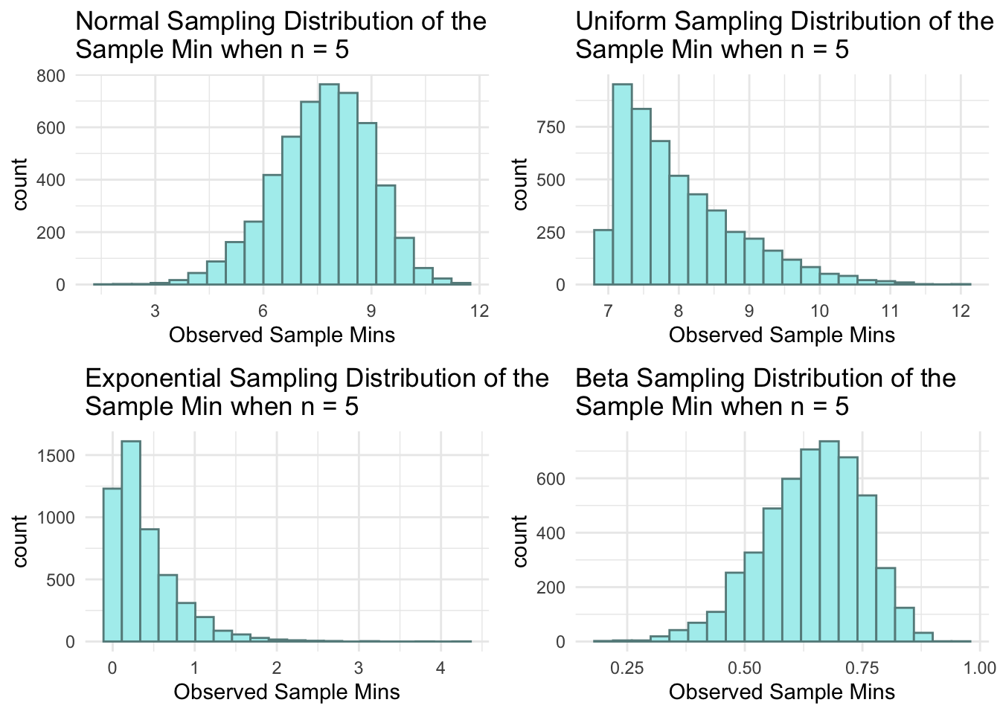
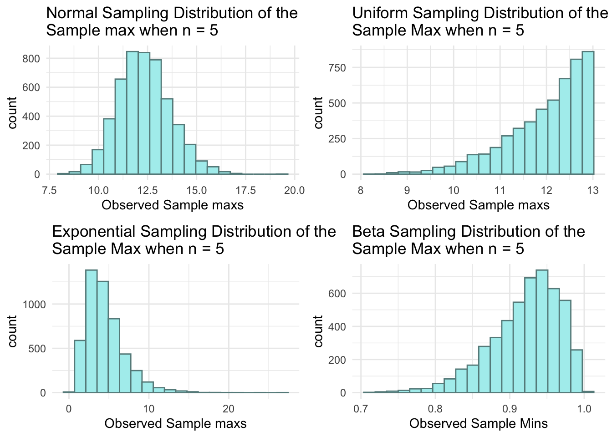
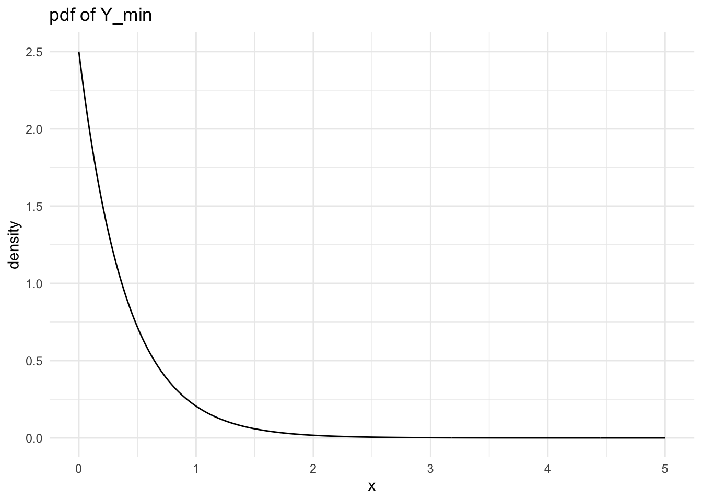
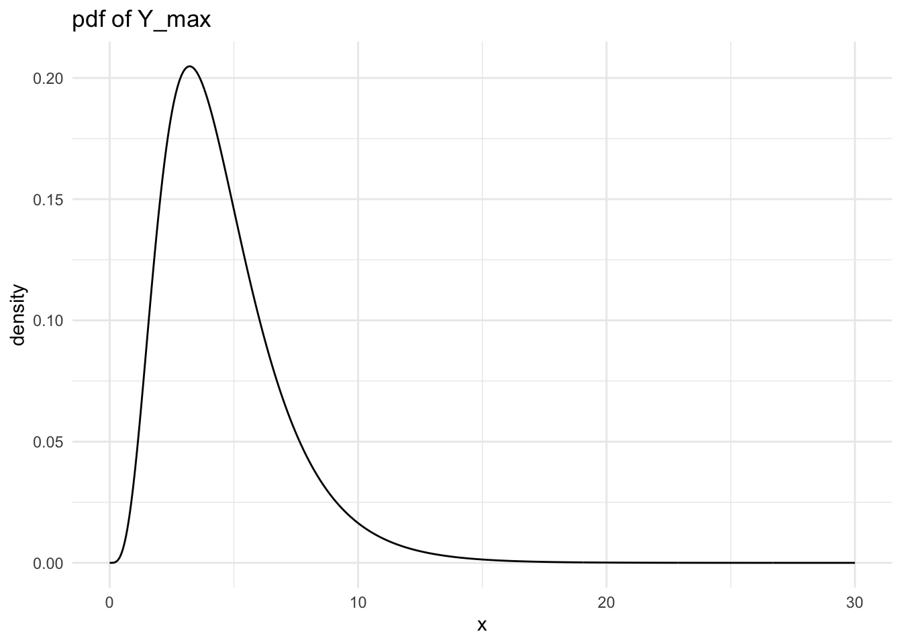

library(tidyverse)
library(gridExtra)
library(knitr)Mini-Project 1: Sampling Distribution of the Sample Minimum and Maximum
Carry out simulations of the sampling distributions of the sample minimum (\(Y_{min}\)) and the sample maximum (\(Y_{max}\)) when taking samples of size \(n = 5\) from different populations (specified below). Fill in the summary table in this document and use it answer the questions that follow.
Statement of Integrity
“I have followed all rules for collaboration for this project, and I have not used generative AI on this project.”
Norah Kuduk
Population Distributions

Normal Distribution
\(\text{N}(\mu = 10, \sigma^2 = 4)\)
Simulated Distribution of the Sample Minimum (Normal)
n <- 5 # sample size
mu <- 10 # population mean
sigma <- 2 # population standard deviation
generate_normal_min <- function(mu, sigma, n) {
single_sample <- rnorm(n, mu, sigma)
sample_min <- min(single_sample)
return(sample_min)
}
nsim <- 5000 # number of simulations
## code to map through the function.
## the \(i) syntax says to just repeat the generate_normal_mean function
## nsim times
normal_mins <- map_dbl(1:nsim, \(i) generate_normal_min(mu = mu, sigma = sigma, n = n))
## print some of the 5000 means
## each number represents the sample mean from __one__ sample.
normal_mins_df <- tibble(normal_mins)
normal_min_plot <- ggplot(data = normal_mins_df, aes(x = normal_mins)) +
geom_histogram(colour = "paleturquoise4", fill = "paleturquoise2", bins = 20) +
theme_minimal() +
labs(x = "Observed Sample Mins",
title = paste("Normal Sampling Distribution of the \nSample Min when n =", n))
kable(normal_mins_df |>
summarise(mean_samp_dist = mean(normal_mins),
var_samp_dist = var(normal_mins),
se_samp_dist = sd(normal_mins)))Warning in attr(x, "align"): 'xfun::attr()' is deprecated.
Use 'xfun::attr2()' instead.
See help("Deprecated")Warning in attr(x, "format"): 'xfun::attr()' is deprecated.
Use 'xfun::attr2()' instead.
See help("Deprecated")| mean_samp_dist | var_samp_dist | se_samp_dist |
|---|---|---|
| 7.662741 | 1.816859 | 1.347909 |
Simulated Distribution of the Sample Maximum (Normal)
n <- 5 # sample size
mu <- 10 # population mean
sigma <- 2 # population standard deviation
generate_normal_max <- function(mu, sigma, n) {
single_sample <- rnorm(n, mu, sigma)
sample_max <- max(single_sample)
return(sample_max)
}
nsim <- 5000
normal_maxs <- map_dbl(1:nsim, \(i) generate_normal_max(mu = mu, sigma = sigma, n = n))
normal_maxs_df <- tibble(normal_maxs)
normal_max_plot <- ggplot(data = normal_maxs_df, aes(x = normal_maxs)) +
geom_histogram(colour = "paleturquoise4", fill = "paleturquoise2", bins = 20) +
theme_minimal() +
labs(x = "Observed Sample maxs",
title = paste("Normal Sampling Distribution of the \nSample max when n =", n))
kable(normal_maxs_df |>
summarise(mean_samp_dist = mean(normal_maxs),
var_samp_dist = var(normal_maxs),
se_samp_dist = sd(normal_maxs)))Warning in attr(x, "align"): 'xfun::attr()' is deprecated.
Use 'xfun::attr2()' instead.
See help("Deprecated")Warning in attr(x, "format"): 'xfun::attr()' is deprecated.
Use 'xfun::attr2()' instead.
See help("Deprecated")| mean_samp_dist | var_samp_dist | se_samp_dist |
|---|---|---|
| 12.33985 | 1.814831 | 1.347157 |
Uniform Distribution
\(\text{Unif}(\theta_1 = 7, \theta_2 = 13)\)
Simulated Distribution of the Sample Minimum (Uniform)
n <- 5
theta_1 <- 7
theta_2 <- 13
generate_uniform_min <- function(theta_1, theta_2, n) {
single_sample <- runif(n, theta_1, theta_2)
sample_min <- min(single_sample)
return(sample_min)
}
nsim <- 5000
uniform_mins <- map_dbl(1:nsim, \(i) generate_uniform_min(theta_1 = theta_1, theta_2 = theta_2, n = n))
uniform_mins_df <- tibble(uniform_mins)
uniform_min_plot <- ggplot(data = uniform_mins_df, aes(x = uniform_mins)) +
geom_histogram(colour = "paleturquoise4", fill = "paleturquoise2", bins = 20) +
theme_minimal() +
labs(x = "Observed Sample Mins",
title = paste("Uniform Sampling Distribution of the \nSample Min when n =", n))
kable(uniform_mins_df |>
summarise(mean_samp_dist = mean(uniform_mins),
var_samp_dist = var(uniform_mins),
se_samp_dist = sd(uniform_mins)))Warning in attr(x, "align"): 'xfun::attr()' is deprecated.
Use 'xfun::attr2()' instead.
See help("Deprecated")Warning in attr(x, "format"): 'xfun::attr()' is deprecated.
Use 'xfun::attr2()' instead.
See help("Deprecated")| mean_samp_dist | var_samp_dist | se_samp_dist |
|---|---|---|
| 7.99758 | 0.6993106 | 0.8362479 |
Simulated Distribution of the Sample Maximum (Uniform)
n <- 5
theta_1 <- 7
theta_2 <- 13
generate_uniform_max <- function(theta_1, theta_2, n) {
single_sample <- runif(n, theta_1, theta_2)
sample_max <- max(single_sample)
return(sample_max)
}
nsim <- 5000
uniform_maxs <- map_dbl(1:nsim, \(i) generate_uniform_max(theta_1 = theta_1, theta_2 = theta_2, n = n))
uniform_maxs_df <- tibble(uniform_maxs)
uniform_max_plot <- ggplot(data = uniform_maxs_df, aes(x = uniform_maxs)) +
geom_histogram(colour = "paleturquoise4", fill = "paleturquoise2", bins = 20) +
theme_minimal() +
labs(x = "Observed Sample maxs",
title = paste("Uniform Sampling Distribution of the \nSample Max when n =", n))
kable(uniform_maxs_df |>
summarise(mean_samp_dist = mean(uniform_maxs),
var_samp_dist = var(uniform_maxs),
se_samp_dist = sd(uniform_maxs)))Warning in attr(x, "align"): 'xfun::attr()' is deprecated.
Use 'xfun::attr2()' instead.
See help("Deprecated")Warning in attr(x, "format"): 'xfun::attr()' is deprecated.
Use 'xfun::attr2()' instead.
See help("Deprecated")| mean_samp_dist | var_samp_dist | se_samp_dist |
|---|---|---|
| 11.97561 | 0.7415289 | 0.8611207 |
Exponential Distribution
\(\text{Exp}(\lambda = 0.5)\)
Simulated Distribution of the Sample Minimum (exponential)
n <- 5
lambda <- 0.5
generate_exponential_min <- function(lambda, n) {
single_sample <- rexp(n, lambda)
sample_min <- min(single_sample)
return(sample_min)
}
nsim <- 5000
exponential_mins <- map_dbl(1:nsim, \(i) generate_exponential_min(lambda = lambda, n = n))
exponential_mins_df <- tibble(exponential_mins)
exponential_min_plot <- ggplot(data = exponential_mins_df, aes(x = exponential_mins)) +
geom_histogram(colour = "paleturquoise4", fill = "paleturquoise2", bins = 20) +
theme_minimal() +
labs(x = "Observed Sample Mins",
title = paste("Exponential Sampling Distribution of the \nSample Min when n =", n))
kable(exponential_mins_df |>
summarise(mean_samp_dist = mean(exponential_mins),
var_samp_dist = var(exponential_mins),
se_samp_dist = sd(exponential_mins)))Warning in attr(x, "align"): 'xfun::attr()' is deprecated.
Use 'xfun::attr2()' instead.
See help("Deprecated")Warning in attr(x, "format"): 'xfun::attr()' is deprecated.
Use 'xfun::attr2()' instead.
See help("Deprecated")| mean_samp_dist | var_samp_dist | se_samp_dist |
|---|---|---|
| 0.399938 | 0.1614184 | 0.4017691 |
Simulated Distribution of the Sample Maximum (exponential)
n <- 5
lambda <- 0.5
generate_exponential_max <- function(lambda, n) {
single_sample <- rexp(n, lambda)
sample_max <- max(single_sample)
return(sample_max)
}
nsim <- 5000
exponential_maxs <- map_dbl(1:nsim, \(i) generate_exponential_max(lambda = lambda, n = n))
exponential_maxs_df <- tibble(exponential_maxs)
exponential_max_plot <- ggplot(data = exponential_maxs_df, aes(x = exponential_maxs)) +
geom_histogram(colour = "paleturquoise4", fill = "paleturquoise2", bins = 20) +
theme_minimal() +
labs(x = "Observed Sample maxs",
title = paste("Exponential Sampling Distribution of the \nSample Max when n =", n))
kable(exponential_maxs_df |>
summarise(mean_samp_dist = mean(exponential_maxs),
var_samp_dist = var(exponential_maxs),
se_samp_dist = sd(exponential_maxs)))Warning in attr(x, "align"): 'xfun::attr()' is deprecated.
Use 'xfun::attr2()' instead.
See help("Deprecated")Warning in attr(x, "format"): 'xfun::attr()' is deprecated.
Use 'xfun::attr2()' instead.
See help("Deprecated")| mean_samp_dist | var_samp_dist | se_samp_dist |
|---|---|---|
| 4.540723 | 6.007452 | 2.45101 |
Beta Distribution
\(\text{Beta}(\alpha = 8, \beta = 2)\)
Simulated Distribution of the Sample Minimum (Beta)
n <- 5 # sample size
alpha <- 8
beta <- 2
generate_beta_min <- function(alpha, beta, n) {
single_sample <- rbeta(n, alpha, beta)
sample_min <- min(single_sample)
return(sample_min)
}
nsim <- 5000
beta_mins <- map_dbl(1:nsim, \(i) generate_beta_min(alpha = alpha, beta = beta, n = n))
beta_mins_df <- tibble(beta_mins)
beta_min_plot <- ggplot(data = beta_mins_df, aes(x = beta_mins)) +
geom_histogram(colour = "paleturquoise4", fill = "paleturquoise2", bins = 20) +
theme_minimal() +
labs(x = "Observed Sample Mins",
title = paste("Beta Sampling Distribution of the \nSample Min when n =", n))
kable(beta_mins_df |>
summarise(mean_samp_dist = mean(beta_mins),
var_samp_dist = var(beta_mins),
se_samp_dist = sd(beta_mins)))Warning in attr(x, "align"): 'xfun::attr()' is deprecated.
Use 'xfun::attr2()' instead.
See help("Deprecated")Warning in attr(x, "format"): 'xfun::attr()' is deprecated.
Use 'xfun::attr2()' instead.
See help("Deprecated")| mean_samp_dist | var_samp_dist | se_samp_dist |
|---|---|---|
| 0.643855 | 0.0113837 | 0.1066944 |
Simulated Distribution of the Sample Maximum (Beta)
n <- 5 # sample size
alpha <- 8
beta <- 2
generate_beta_max <- function(alpha, beta, n) {
single_sample <- rbeta(n, alpha, beta)
sample_max <- max(single_sample)
return(sample_max)
}
nsim <- 5000
beta_maxs <- map_dbl(1:nsim, \(i) generate_beta_max(alpha = alpha, beta = beta, n = n))
beta_maxs_df <- tibble(beta_maxs)
beta_max_plot <- ggplot(data = beta_maxs_df, aes(x = beta_maxs)) +
geom_histogram(colour = "paleturquoise4", fill = "paleturquoise2", bins = 20) +
theme_minimal() +
labs(x = "Observed Sample Mins",
title = paste("Beta Sampling Distribution of the \nSample Max when n =", n))
kable(beta_maxs_df |>
summarise(mean_samp_dist = mean(beta_maxs),
var_samp_dist = var(beta_maxs),
se_samp_dist = sd(beta_maxs)))Warning in attr(x, "align"): 'xfun::attr()' is deprecated.
Use 'xfun::attr2()' instead.
See help("Deprecated")Warning in attr(x, "format"): 'xfun::attr()' is deprecated.
Use 'xfun::attr2()' instead.
See help("Deprecated")| mean_samp_dist | var_samp_dist | se_samp_dist |
|---|---|---|
| 0.9206574 | 0.0022239 | 0.0471588 |
Histograms for Sample Minimums

Histograms for Sample Maximums

Table of Results
| \(\text{N}(\mu = 10, \sigma^2 = 4)\) | \(\text{Unif}(\theta_1 = 7, \theta_2 = 13)\) | \(\text{Exp}(\lambda = 0.5)\) | \(\text{Beta}(\alpha = 8, \beta = 2)\) | |
|---|---|---|---|---|
| \(\text{E}(Y_{min})\) | 7.67 | 8.00 | 0.392 | 0.648 |
| \(\text{E}(Y_{max})\) | 12.4 | 12.0 | 4.55 | 0.921 |
| \(\text{SE}(Y_{min})\) | 1.33 | 0.862 | 0.389 | 0.106 |
| \(\text{SE}(Y_{max})\) | 1.33 | 0.839 | 2.43 | 0.0459 |
Summary
For the Normal population model we can see that the \(SE(Y_{min})\) and \(SE(Y_{max})\) are equal, meaning that the min and max values of a sample have the same (or similar) standard error. For the Uniform model, the \(SE(Y_{min})\) and \(SE(Y_{max})\) are very similar (within 0.35), which also indicates that taking the min or the max has no effect of the variation of the sampling distribution. For the Exponential model, the \(SE(Y_{min})\) is much lower than the \(SE(Y_{max})\), which indicates that there is less variation in the lowest values of a sample, while there is more variation in the opposite. The reverse is true for the Beta model, as the \(SE(Y_{min})\) is much higher than the \(SE(Y_{max})\), indicating greater variation in minimum values of a sample.
From these observations, we can use the population distribution model graphs at the top of this file to make some conclusions about how the \(SE(Y_{min})\) and \(SE(Y_{max})\) values compare. For symmetric models like the Normal and the Uniform, there should be little to no variation in the \(SE(Y_{min})\) and \(SE(Y_{max})\) values. However, for skewed models like Exponential and Beta, we should expect a difference. To go further, a right-skewed model (like the Exponential distribution) will have less variation in the minimum, while a left-skewed model (like the Beta model), will have less variation in the maximum.
Exponential Population Model
pdf of Ymin
The pdf of any Exponential population is \(\lambda e^{-\lambda y}\) for \(y \ge 0\)
For \(Y \sim Exp(\lambda = 0.5)\)
\(f(y) 0.5e^{-0.5y}\) for \(y \ge 0\)
\(F(y) = \int_{0}^{x} 0.5e^{-0.5y} = 1 - e^{-0.5 y}\) for \(y \ge 0\)
\(f_{min}(y) = n(1-F(y))^{n-1} \times f(y)\)
\(f_{min}(y) = n(1-(1 - e^{-\lambda y})^{n-1} \lambda e^{-\lambda y}\)
\(f_{min}(y) = n(e^{-\lambda y})^{n-1}\lambda e^{-\lambda y}\)
\(f_{min}(y) = n\lambda e^{-n\lambda y + \lambda y}e^{-\lambda y}\)
\(f_{min}(y) = n\lambda e^{-n\lambda y}\) where \(n = 5, \lambda = 0.5\)
\(f_{min}(y) = 2.5e^{-2.5y}\) for \(y \ge 0\)
This is the same as \(Y_{min} \sim Exp(\lambda = 2.5)\)
\(E(Y_{min}) = \frac{1}{\lambda} = \frac{1}{2.5} = 0.4\)
\(SE(Y_{min}) = \sqrt{Var(Y_{min})} = \sqrt{\frac{1}{\lambda^2}} = \sqrt{\frac{1}{2.5^2}} = 0.4\)

pdf of Ymax
The pdf of any Exponential population is \(\lambda e^{-\lambda y}\) for \(y \ge 0\)
For \(Y \sim Exp(\lambda = 0.5)\)
\(f(y) 0.5e^{-0.5y}\) for \(y \ge 0\)
\(F(y) = \int_{0}^{x} 0.5e^{-0.5y} = 1 - e^{-0.5 y}\) for \(y \ge 0\)
\(f_{max}(y) = nF(y)^{n-1} \times f(y)\)
\(f_{max}(y) = n(1 - e^{-\lambda y})^{n-1} \lambda e^{-\lambda y}\)
\(f_{max}(y) = 2.5(1 - e^{-0.5 y})^{4} e^{-0.5 y}\) for \(y \ge 0\)
\(E(Y_{max}) = \int_0^\infty y_{max}2.5(1 - e^{-0.5 y_{max}})^{4} e^{-0.5 y_{max}} = 4.566\)
\(Var(Y_{max}) = E(Y_{max}^2) - [E(Y_{max})]^2\)
\(E(Y_{max}^2) = \int_0^\infty y_{max}^2 2.5(1 - e^{-0.5 y_{max}})^{4} e^{-0.5 y_{max}} = 26.709\)
\(Var(Y_{max}) = 26.709 - 4.566^2 = 5.86\)
\(SE(Y_{max}) = \sqrt{Var(Y_{max})} = \sqrt{5.86} = 2.42\)

Analysis
| Simulated | Theoretical | |
|---|---|---|
| \(\text{E}(Y_{min})\) | 0.392 | 0.4 |
| \(\text{E}(Y_{max})\) | 4.55 | 4.566 |
| \(\text{SE}(Y_{min})\) | 0.389 | 0.4 |
| \(\text{SE}(Y_{max})\) | 2.43 | 2.42 |
We can see that the simulated and theoretical answers are very close to each other. The \(E(Y_{min})\) and \(E(Y_{max})\) are almost identical, and the \(SE(Y_{min})\) and \(SE(Y_{max})\) are also very close. This implies that theoretical calculations are correct and that the simulated answers are also correct.